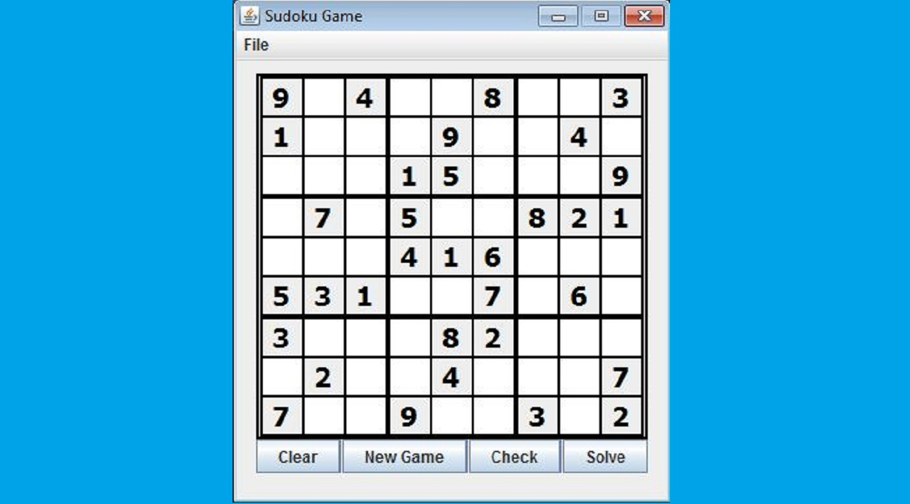

Sudoku Application
 This application has only one frame. When it is opened it randomly selects a puzzle and displays it. The user can input numbers in any of the small squares to solve the puzzle. If they want to check their progress they can click the Check button and the numbers which are incorrect will become red. If the user just wants the puzzle solved they can press the Solve button. The Clear button wipes out the user input numbers and the New Game button puts up a new puzzle. On the top there is a tool bar with a component named file, under file there are two options open and about. The open option opens a file explorer which can be used to bring up in a unique puzzle from a text file. The about option is just a quick dialog box that displays how to play.